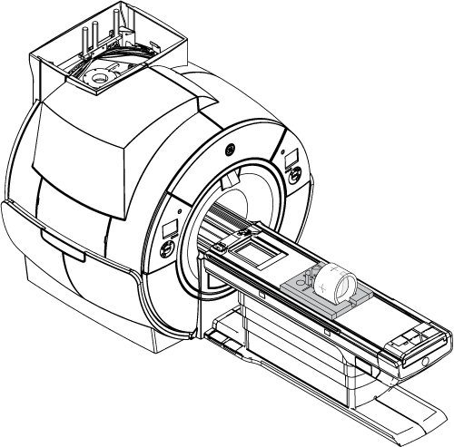

Checking B0 Drift
Prerequisites
Unwanted changes in the main magnetic field strength can occur when the spatially uniform field component is altered for a short term, during the process of scanning, or when the spatially uniform field component is permanently altered. This is known as short-term B0 drift.
This functional check confirms if the B0 drift values are within the system specification or not.
Procedure
- Cool down the system before checking B0 drift. Refer to the Cooling the system procedure.
- Put the TLT phantom and sphere in the foam support on the flat table.
Position the phantom in the center of the cradle and center it on the Posterior Array (PA) coil. To achieve the best test measurement, the phantom must be located in the center (long direction) of the cradle.
Figure 1. TLT phantom and sphere on the table

- Landmark on the crosshairs of the body TLT loader and press Advance to Scan.
- Start the B0 drift tool:
- (For non-proprietary service tools) From the Common Service Desktop, select . Click Click here to start this tool.
The B0 Drift window appears. - Select the axis that is being validated. To select a second axis, press <Shift> and click another axis.
- Select Check only.The total time required to run B0 Drift Test Mode is 63 minutes.
- Select Scan.When the test is complete, it displays the compensated drift rate for the selected axis. Values in green are passing; those in red are failing.If one axis fails, run B0 Drift Calibration for only the failed axis.